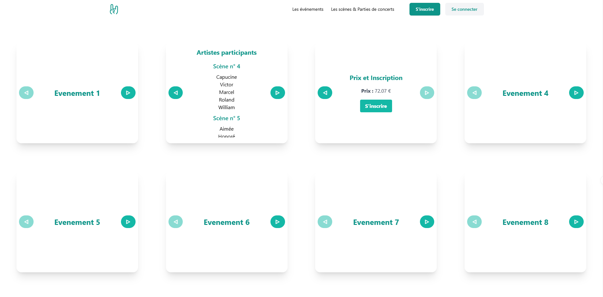
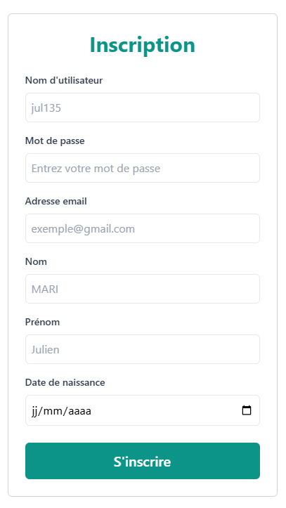

Projet Front API REST - Gestion d'Événements Musicaux
Contexte du Projet
Ce projet représente la partie front-end de l'API REST développée précédemment pour la gestion d'événements musicaux. Réalisé avec Vue.js, Tailwind CSS, et PrimeVue, ce front permet aux utilisateurs de consulter, s'inscrire ou se désinscrire d'événements, ainsi que de gérer leurs informations personnelles.
Méthodes de Travail
Nous avons adopté une approche modulaire pour développer le front-end :
- Utilisation de Vue Router pour la gestion des routes.
- Création de composants réutilisables avec PrimeVue pour une interface utilisateur riche.
- Styling adapté avec Tailwind CSS pour un design moderne et responsive.
- Connexion à l'API REST via Axios pour effectuer des requêtes HTTP.
Résultats Obtenus
- Une interface utilisateur intuitive pour consulter les événements musicaux.
- Fonctionnalité d'inscription, d'authentification, et de modification de profil.
- Gestion des inscriptions avec vérification des places disponibles et conflits d'horaires.
- Notifications en temps réel pour améliorer l'expérience utilisateur.
Preuves Visuelles





Ressources Complémentaires
Pour consulter le code source complet de ce projet, rendez-vous sur le dépôt GitHub du projet Front API REST.
Technologies Utilisées
- Vue.js pour la construction de l'interface utilisateur.
- Tailwind CSS pour le design responsive.
- PrimeVue pour les composants UI avancés.
- Axios pour les requêtes HTTP vers l'API REST.
- TypeScript pour un code mieux typé et maintenable.
Compétences Mobilisées
- C1 : Réaliser un développement d'application
- Conception et développement de l'interface front-end.
- Intégration avec l'API REST via des requêtes HTTP.
- C3 : Concevoir une interface utilisateur
- Création de composants dynamiques et réactifs.
- Respect des principes UX/UI pour une navigation fluide.
- C4 : Gérer des données de l'information
- Manipulation et affichage des données utilisateurs et événements.
- Validation et traitement des entrées utilisateur.
- C5 : Conduire un projet
- Planification des étapes de développement.
- Collaboration avec les membres de l'équipe via GitHub.